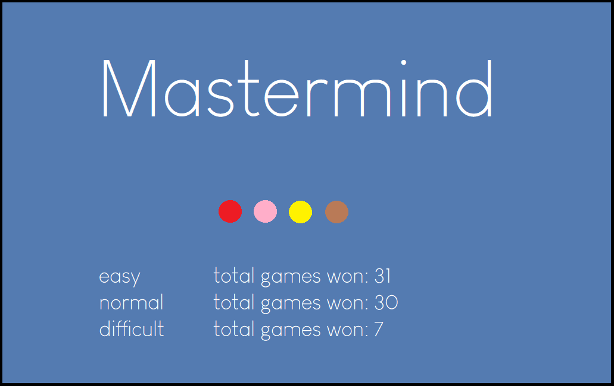
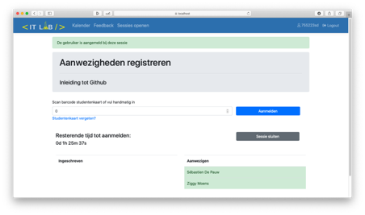
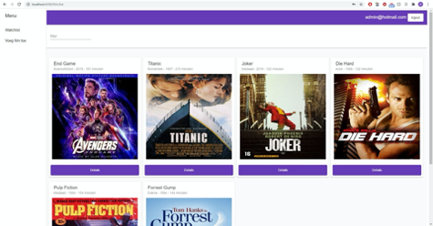

Projecten
-

Mastermind
Java - MySql
Mijn eerste project was in mijn eerste jaar Toegepaste Informatica. We moesten in teams van 4 het mastermind spel namaken.
Github -

Administratieve applicatie HoGent
Java - C# (.NET) - Microsoft SQL Server
In het tweede jaar Toegepaste Informatica moesten we een administratieve applicatie schrijven voor het ITLab. Dit project bestond uit twee delen, een deel Java en een deel C#. Dit project was ook in teams van 4.
Github -

FilmApp
TypeScript (Angular) - C# (.NET) - Microsoft SQL Server
In het tweede jaar Toegepaste Informatica moest ik een applicatie schrijven naar keuze in het framework Angular. Ik koos om een applicatie te schrijven over films. Dit was een zeer basic applicatie.
Github